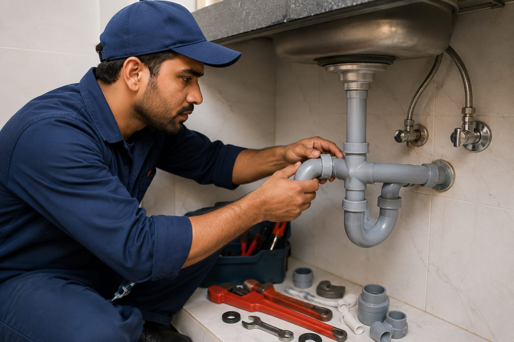

- Imagine you are planning to build a new house.
- You need pipe connections in your wash basin, bathroom, kitchen, and water tank.
- Someone should carefully install all the pipes and water systems properly.
- That person is called a Plumber.
- 👉 In simple words: Plumbers install and repair water pipes, taps, drainage systems, and sanitary fittings.
Plumber
🧑🎨 What Do They Do?

🎓 How to Become a Plumber
There are different ways to become a plumber.
You can start learning plumbing skills after Class 10 through an ITI course or other professional training programs.
You can also learn skills such as installing and repairing pipes, taps, drainage systems, and sanitary fittings by working with an experienced plumber.
Certifications can help you build your skills and advance your career.
These Plumbing programs help students learn pipe installation, water systems, sanitary fitting, drainage systems, plumbing repairs, and practical technical skills.
ITI in Plumber (NCVT/SCVT)
Duration: 1 Year (2 Semesters)
Eligibility: 10th Pass (Some institutes also accept 8th Pass)
Entrance Exam: State ITI Selection / Merit-Based Admission
Diploma in Plumbing
Duration: 3 Years
Eligibility: 10th Pass with Science and Mathematics
Entrance Exam: State Polytechnic Entrance Exams
📝 Exam Details
(Click on the exam name to see full details)
State ITI Selection State Polytechnic Entrance ExamsNote: Plumbing programs include practical workshop training, pipe installation practice, sanitary fitting, water system maintenance, and field-based technical learning.
These advanced Plumbing programs help students learn building plumbing systems, fire safety pipelines, plumbing design, water management, estimation, and modern technical installation methods.
B.Voc (Bachelor of Vocation) in Plumbing
Duration: 3 Years
Eligibility: 12th Pass from any stream
Entrance Exam: CUET UG / Institute Level Admission
📝 Exam Details
(Click on the exam name to see full details)
CUET UG State Polytechnic Entrance Exams Institute Level AdmissionsNote: Advanced Plumbing programs include practical training in building pipelines, plumbing design, fire safety systems, water management, estimation, and technical project work.
- These certification programs help students learn practical plumbing skills, pipe fitting, plumbing design, water systems, and modern plumbing techniques.
- Some of the institutions offering certifications in Plumbing are listed below.
Note:
(Age limits, marks, and admission process may vary depending on the college or state.
Below are some colleges that offer these courses.
These courses are available in many colleges and universities across India. You can choose colleges based on your location, budget, and entrance exams.)
🏛️ Colleges offering these courses in India
(Tap on a college to view details)
After 10th (ITI, Polytechnic & Skill Training)
Government ITI, Lathur Government Industrial Training Institute, Kalamassery, Ernakulam State Institute of Plumbing Technology, Odisha Sri Ramakrishna Mission Vidyalaya ITI, CoimbatoreAfter 12th (Advanced Diploma & Degree Programs)
Rabindranath Tagore University, Madhya Pradesh Matrix SkillTech University, SikkimSTEP 1
Imagine you are working as a Plumber.
STEP 2
People call you to install water pipes, taps, bathroom fittings, and drainage systems.
STEP 3
You carefully measure, cut, and connect pipes for proper water flow.
STEP 4
You repair leaking pipes, blocked drains, and damaged plumbing systems.
STEP 5
You help homes and buildings get safe and proper water supply systems.
STEP 6
If fixing problems, working with tools, and installing water systems excites you, this career may suit you.
Homes & Apartments
Install and repair water pipes, taps, bathrooms, and kitchen plumbing systems.
Commercial Buildings
Work on plumbing systems in offices, malls, hotels, and large buildings.
Construction Sites
Install pipelines and drainage systems during building construction.
Bathroom & Sanitary Services
Fit wash basins, showers, toilets, and sanitary systems.
Factories & Industries
Maintain industrial water pipelines, pumps, and plumbing equipment.
Hotels & Hospitals
Ensure proper water supply and plumbing maintenance in large facilities.
Self-Employment
Start your own plumbing service business and work independently.
Abroad Opportunities
Work in construction companies and maintenance services in different countries.
(Click Yes or No for each question)
1. Are you interested in learning how water pipes and plumbing systems work?
2. Do you like working with tools?
3. Are you interested in installing water systems in homes and buildings?
4. Imagine you are working as a Plumber. A shop owner notices water leaking from a pipe and asks you to fix it. You check the pipes and find where the leak is coming from. You repair the pipe and make sure the water flows properly again. Finally, the leak is fixed and the shop can use its water system normally. Do you like this type of work?
5. Imagine a family building a new house. You help install water pipes, bathroom fittings, and plumbing systems for the entire home. Does this excite you?